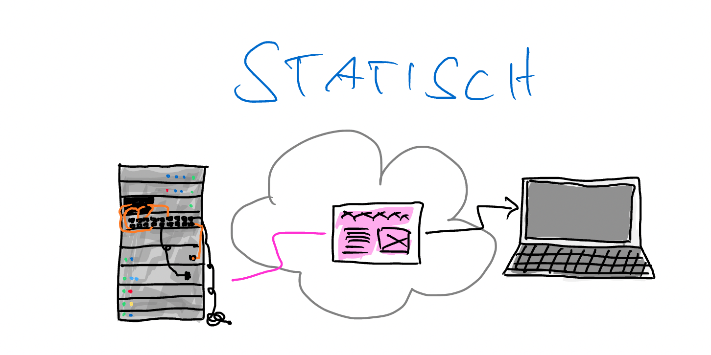

Eine dynamische Seite ist "veränderlich" – bei jedem Seitenaufruf wird sie neu berechnet und kann demnach aus unterschiedlichen Inhalten aufgebaut sein.
Beispiel: Lorem Picsum

Eine statische Seite ist "wie sie ist" – bei jedem Seitenaufruf wird exakt derselbe Inhalt übertragen und dargestellt.
Beispiel: End of the Internet
Eine dynamische Seite ist "veränderlich" – bei jedem Seitenaufruf wird sie neu berechnet und kann demnach aus unterschiedlichen Inhalten aufgebaut sein.
Beispiel: Lorem Picsum
Trotzdem kommt in beiden Varianten am Ende ein HTML-Dokument bei euch im Browser an. Und der zeigt es dann nach einem festen Satz von Regeln an.
Dickes AAAAABER: Eine Webseite kann auch auf der Clientseite nochmal verändert werden. Ist dann auch irgendwie dynamisch. Dazu gleich mehr. Erst müsst ihr wissen, was ein DOM-Tree ist.